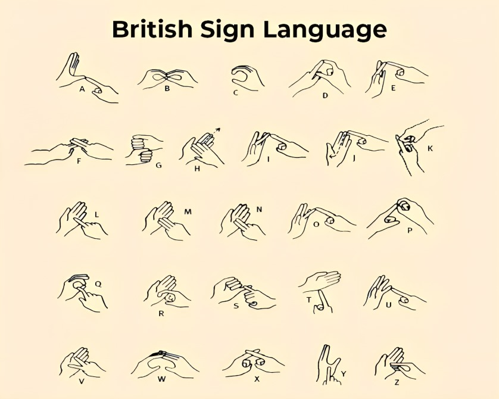

Sign language is a captivating and expressive form of communication that relies on visual gestures, facial expressions, and body movements to convey meaning. It is a dynamic and complete language with its own intricate vocabulary, grammar, and syntax, allowing individuals who are Deaf or have hearing impairments to engage in meaningful conversations. Unlike spoken languages, sign language transcends auditory barriers, creating a vibrant and inclusive mode of communication that fosters connection and understanding. As a cultural and linguistic treasure, sign language not only enables Deaf communities to share thoughts and emotions but also serves as a testament to the richness and diversity of human expression.
It is a complete language with a unique vocabulary, construction and grammar. In the United States, Sign Language is considered a foreign language due to its unique vocabulary and construction.
American Sign Language (ASL) is a complete, natural language that has the same linguistic properties as spoken languages, with grammar that differs from English. ASL is expressed by movements of the hands and face.
It is the primary language of many North Americans who are deaf and is one of several communication options used by people who are deaf or hard-of-hearing.American Sign Language (ASL) is a complete, natural language used primarily by the Deaf and hard-of-hearing community in the United States and parts of Canada. It is a visual and gestural language that employs hand movements, facial expressions, and body postures to convey meaning. ASL is recognized as a distinct and separate language with its own grammar and syntax, making it fundamentally different from spoken English. Key features of ASL include its use of handshapes, movements, and facial expressions to form words and sentences. Handshapes are a crucial component, and each handshape represents a specific phonological aspect of the language. Additionally, the movement of the hands, combined with facial expressions, conveys nuanced meanings, emotions, and grammatical structures.
British Sign Language (BSL) is a sign language used in the United Kingdom (UK), and is the first or preferred language of some deaf people in the UK. BSL uses a two-handed manual alphabet.
It is estimated that 125,000 deaf adults in the UK use BSL, plus an estimated 20,000 children. In 2011, 15,000 people living in England and Wales reported themselves using BSL as their main language.British Sign Language (BSL) is the primary sign language used by the Deaf community in the United Kingdom. It is a rich and expressive visual-gestural language that employs hand movements, facial expressions, and body postures to convey meaning. BSL, like other sign languages, is a complete and distinct language with its own grammar and syntax, separate from spoken English. Key features of BSL include its use of handshapes, movements, and facial expressions to convey information. Handshapes, in particular, play a crucial role, with each shape representing different linguistic elements. The language also utilizes spatial references and classifiers to provide detailed and nuanced descriptions, adding depth to communication
